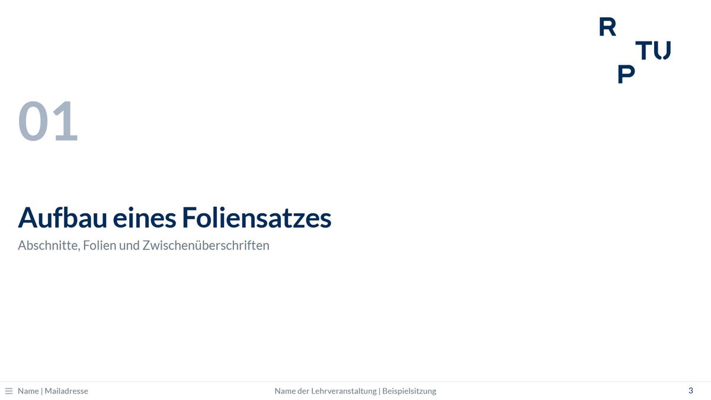
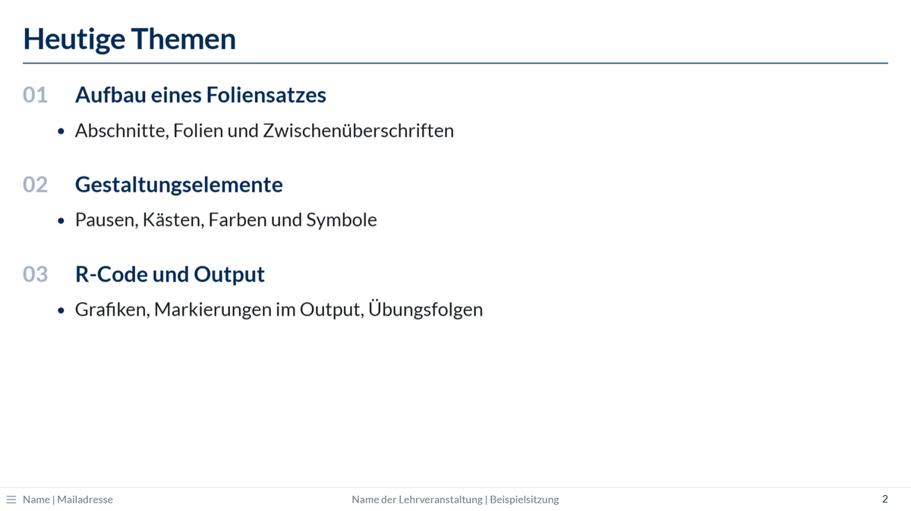
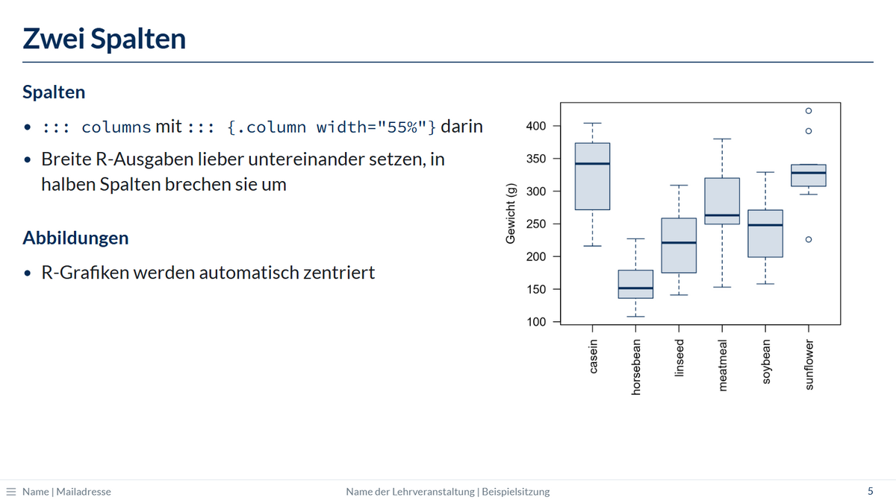
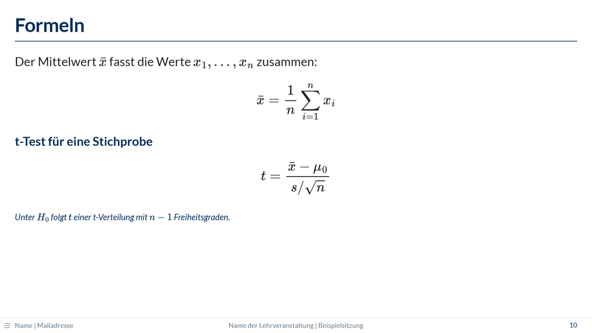
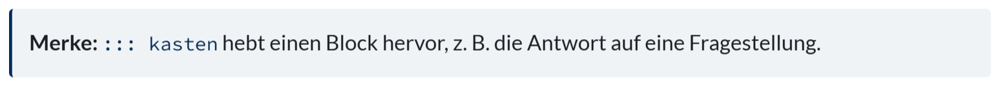
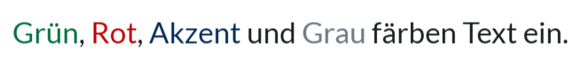
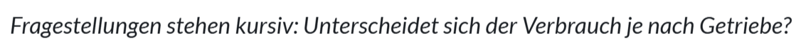
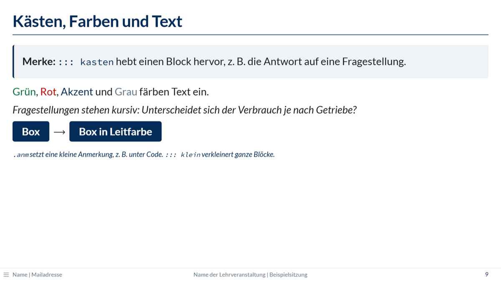
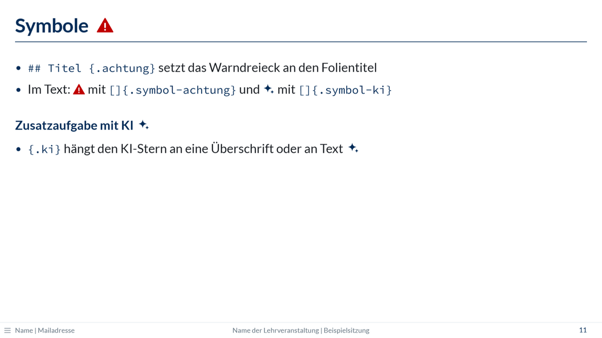

Folien gestalten
Aufbau, Spalten, Formeln, Einblendungen, Notizen, Kästen, Farben und Symbole
Zu jedem Element gibt es hier kopierbaren Code und ein Bild. Alle Klassen auf einen Blick, auch mit ihren englischen Namen, stehen in der Referenz.
Abschnitte
# Deskriptive Statistik
Lage- und Streuungsmaße# Titel erzeugt eine Abschnittsfolie mit großer Nummer und Logo. Die Abschnitte werden fortlaufend nummeriert (01, 02, …). Text direkt unter der Überschrift wird zum grauen Untertitel.

Eine Nummer lässt sich auch selbst setzen, z. B. # Rückblick {nr="00"}. Die fortlaufende Zählung der übrigen Abschnitte ändert sich dadurch nicht.
Agenda
## Heutige Themen {.agenda}
### Deskriptive Statistik
- Lage- und Streuungsmaße
### Grafiken mit ggplot2{.agenda} nummeriert die ###-Überschriften dieser Folie (01, 02, …). Listen und Text darunter werden passend eingerückt.

Folien und Zwischenüberschriften
## Ablauf der Sitzungen
### Theorie
- Inhalte wiederholen und vertiefen
### Praxis
- Verfahren in R anwenden## Titel beginnt eine neue Folie mit Titellinie, ### setzt eine fette Zwischenüberschrift.
Zwei Spalten
## Zwei Spalten
::: columns
::: {.column width="55%"}
### Links
- Text oder Code
:::
::: {.column width="45%"}
```{r}
#| echo: false
boxplot(weight ~ feed, data = chickwts)
```
:::
:::Jede Spalte ist ein eigener Block in ::: columns. Die Breiten sollten zusammen höchstens 100 % ergeben. Jeder Block endet mit :::; ein fehlendes ::: verschiebt den Rest der Folie in die Spalte.

Breiter R-Output gehört nicht in halbe Spalten, siehe Breiter Output.
Bilder
{width="60%"}Bilder werden wie in jedem Quarto-Dokument eingebunden; der Pfad gilt relativ zur qmd-Datei. Mehr Möglichkeiten stehen in der Quarto-Dokumentation.
Formeln
Der Mittelwert $\bar{x}$ ist definiert als
$$\bar{x} = \frac{1}{n} \sum_{i=1}^{n} x_i$$Formeln werden in LaTeX geschrieben: zwischen $…$ im Text, zwischen $$…$$ als eigene Zeile. Sie funktionieren auch ohne Internetverbindung, denn die Software für Formeln (MathJax) wird eingebettet. Ein Foliensatz mit Formeln wird dadurch etwa 3 MB größer.

Schrittweise Einblendungen
Sofort sichtbar.
. . .
Erscheint beim nächsten Klick.
::: incremental
- Punkt für Punkt
- erscheint diese Liste
:::
::: fragment
Dieser Block erscheint als Ganzes beim Klick.
:::. . .auf einer eigenen Zeile ist eine Pause: Alles danach erscheint beim nächsten Klick. Das funktioniert auch nach###-Überschriften und in Spalten.::: incrementalblendet eine Liste Punkt für Punkt ein,::: fragmenteinen ganzen Block.- Im Handout erscheinen alle Inhalte sofort.
Sprechernotizen
## Ergebnisse
- Mittelwert und Streuung
::: notes
Auf die Ausreißer in Gruppe B hinweisen.
:::Sprechernotizen erscheinen nur in der Referentenansicht (Taste S), nicht auf der Folie und nicht im Handout.
Kasten
::: kasten
**Merke:** Ein Kasten hebt einen Block hervor, z. B. die Antwort auf eine
Fragestellung.
:::
Text hervorheben
[Grün]{.gruen}, [Rot]{.rot}, [Akzent]{.akzent} und [Grau]{.grau}
[Unterscheidet sich der Verbrauch je nach Getriebe?]{.frage}
Ein wichtiges [Wort]{.box} im Satz
[Kleine Anmerkung, z. B. unter Code]{.anm}| Klasse | Wirkung |
|---|---|
.gruen, .rot, .akzent, .grau |
Textfarbe. Grün und Rot sind bewusst dunkel, weil Beamer Farben aufhellen |
.frage |
kursiv, für Fragestellungen |
.box |
weiße, fette Schrift auf dunkelblauem Grund, für einzelne Wörter |
.anm |
kleine, kursive Anmerkung in Dunkelblau |


Einen ganzen Block in kleinerer Schrift setzt ::: klein.

Symbole
## Output Übung 1 {.achtung}
### Zusatzaufgabe mit KI {.ki}
Im Text: []{.symbol-achtung} und []{.symbol-ki}{.achtung}setzt ein rotes Warndreieck hinter den Folientitel. Gedacht ist es für Output-Folien in einer Übungsfolge.{.ki}setzt einen KI-Stern hinter eine Überschrift oder ein Stück Text, z. B. für Zusatzaufgaben mit KI.[]{.symbol-achtung}und[]{.symbol-ki}setzen das Symbol allein in den Text.
